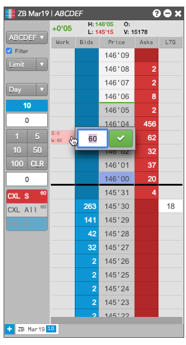
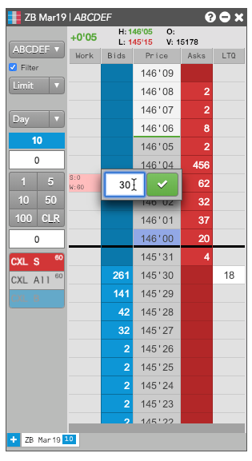
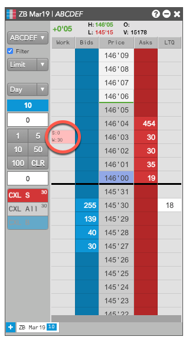
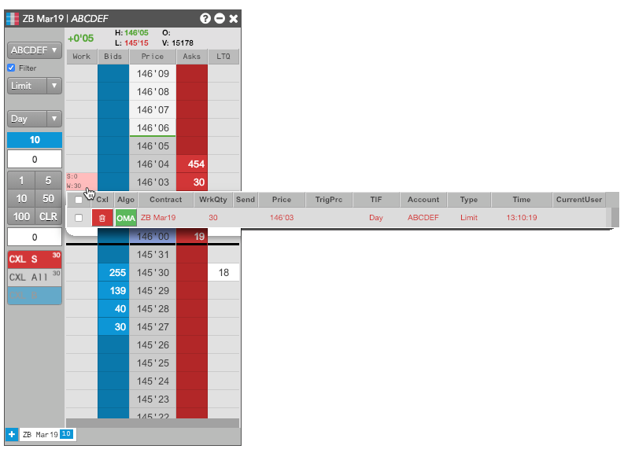

Reducing the total quantity of multiple orders at a price level
If you have multiple orders working at the same price level, you can quickly reduce the total quantity of the these orders. TT will begin deleting newer orders, so you maintain the best position-in-queue, until the total quantity of the remaining orders matches your desired lower total.

For example, suppose you place three working orders at a price level of 10, 20 and 30, respectively, for a total order quantity of 60 at that price level. You then decide you only want to work a total quantity of 30 contracts. TT would delete the 30-lot order (the most recent) to bring the total quantity to 30. Conversely, if you placed the same orders in reverse (30, 20, 10), TT would delete the 10- and 20-lot orders, leaving the single 30-lot order. If necessary, TT will change the quantity of the newest remaining order to acheive the desired total quantity.
This feature is supported only for the following order types:
- Limit
- Stop limit
- Stop market
- TT Stop
To reduce the quantities of all orders at a price level:
-
Right-click on the working order cell on the price-level with multiple working orders.
An entry box appears showing the current total working quantity of the orders at that price level.

-
Enter the desired new, lower total quantity, and click . Note that you can only decrease the quantity; you cannot increase the quantity.

Notice the total working quantity updates.
-
If desired, you can display the Floating Order Book to see the remaining working orders.

Note: You can also reduce the total order quantity using the Floating Order Book.